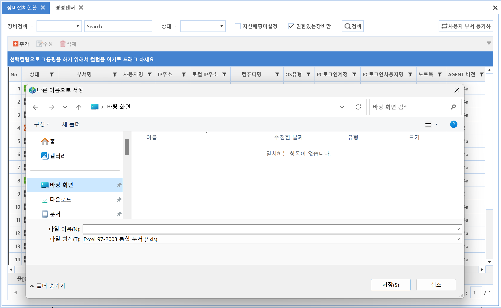

10-5-5. 내보내기
10-5-5. 내보내기
Source: https://www.sweeper.or.kr/etc/manual/10-5-5.html
10-5-5. 내보내기
10. 기타 ›› 10-5. 컬럼 우클릭 ››


-
조회된 Data를 Excel 파일로 저장하기 위한 기능으로 조회화면을 클릭한 뒤 내보내기 메뉴를 클릭하면 Excel 파일 포멧(*.xls)으로 저장할 수 있습니다.
-
거의 모든 화면에서 우클릭 메뉴는 활성화 되며, 미지원 메뉴는 비활성화되어있습니다.

© Copyright SWeeper Inc.. All Rights Reserved